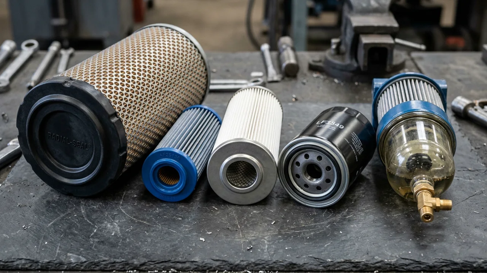
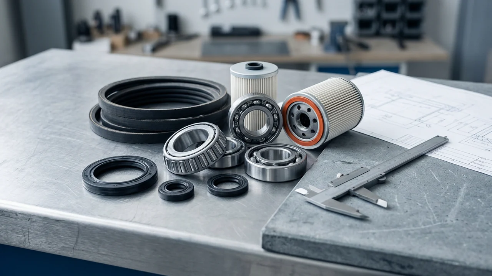
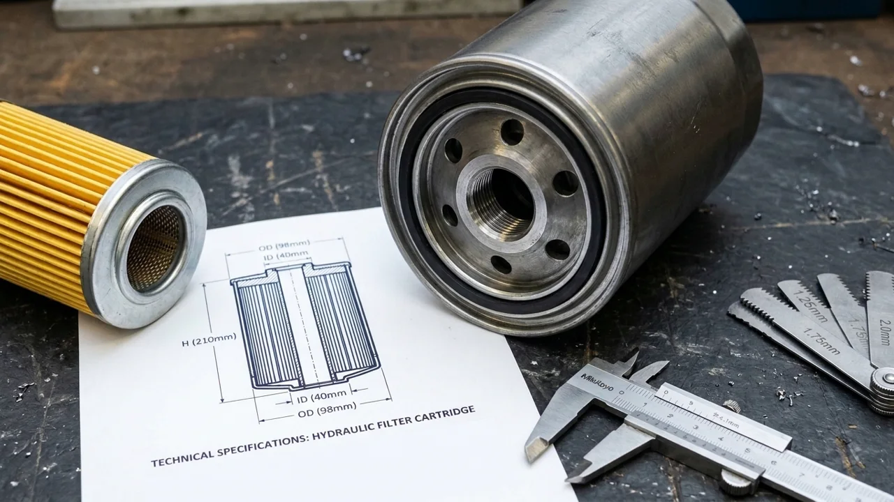
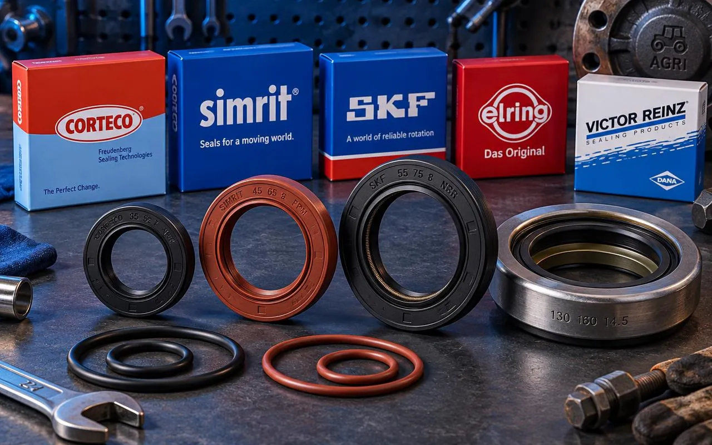
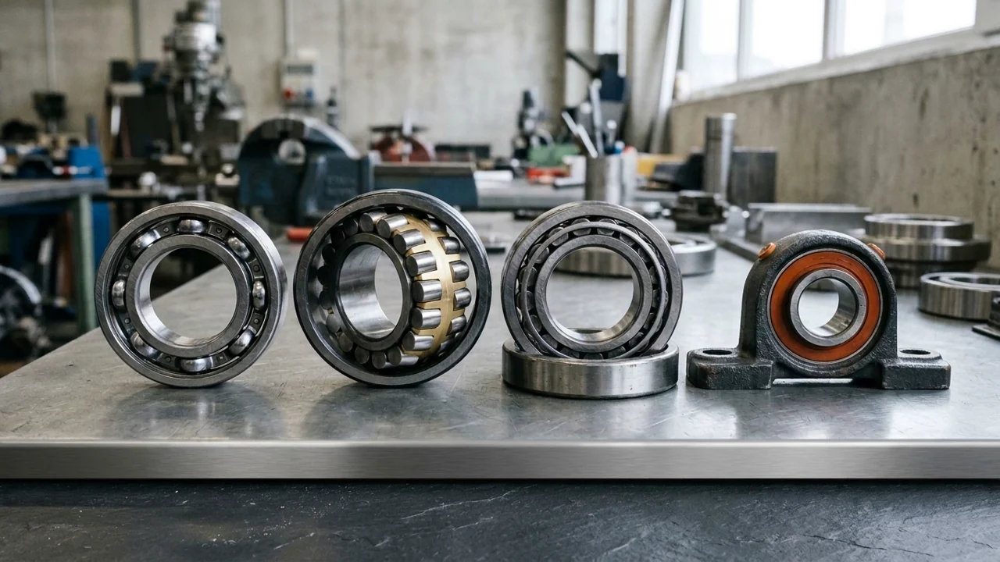
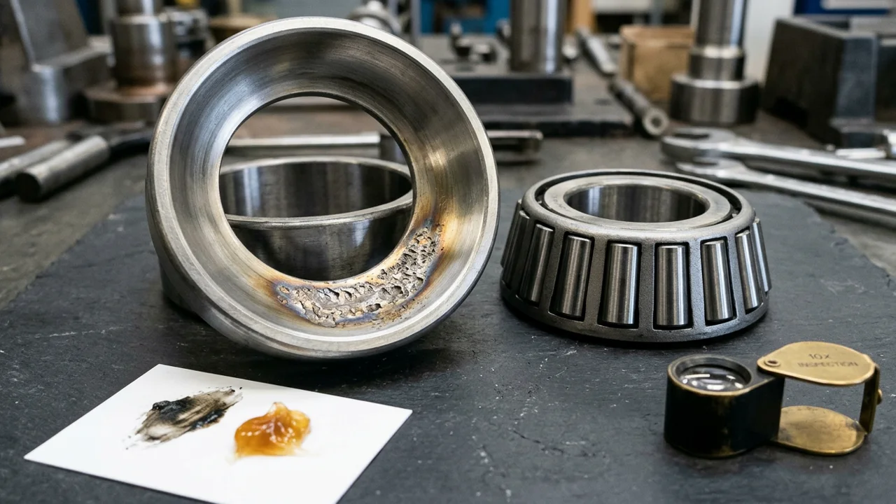

Какие бывают фильтры: назначение для техники, автомобилей и промышленности
Воздушные, масляные, топливные, гидравлические, салонные и промышленные фильтры — где применяются и чем отличаются.
Читать материалПрактические статьи о комплектующих, подборе запчастей, эксплуатации техники и организации снабжения.


Воздушные, масляные, топливные, гидравлические, салонные и промышленные фильтры — где применяются и чем отличаются.
Читать материалAgri Hub и Mudblock для агротехники, подшипники генераторов и кондиционеров, промышленное применение и проверка маркировки.
Читать материалЧек-лист осмотра, фиксации дефектов и заказа комплектующих перед посевной, уборочной и другой сезонной нагрузкой.
Читать материалAGRI-вариаторы и PowerBand для сельхозтехники, а также особенности отдельного подбора промышленных и автомобильных ремней Gates.
Читать материалКак устроены пластичные смазки, чем отличаются загустители, что означает класс NLGI и как безопасно перейти на другой продукт.
Читать материалКак точно подобрать запчасти JCB: идентификация машины и агрегатов, PIN и серийный номер, Parts Diagrams и Service Pro, серийные границы, замена артикулов и проверка аналогов.
Читать материалПошаговый алгоритм выбора по назначению узла, типу движения, размерам, материалу, рабочей среде и состоянию посадочных поверхностей.
Читать материал
Автомобильные, грузовые, сельскохозяйственные и гидравлические фильтры MANN-FILTER — каталог и подбор.
Читать материалМасла для КПП, мостов, редукторов и гидросистем: SAE J306, ISO VG, API GL, UTTO/STOU и требования изготовителя.
Читать материал
Как проверить совместимость аналога для автомобильных, промышленных и сельскохозяйственных узлов — по полному обозначению и условиям работы.
Читать материал
Гидравлические, радиальные и статические решения Trelleborg Sealing Solutions. Разбираем Turcon®, Zurcon® и выбор по каталогу.
Читать материалКак идентифицировать машину и агрегат CLAAS, работать с Parts Doc, проверять каталожный номер, серийную применяемость и аналоги.
Читать материалДиагностика преждевременного износа: натяжение, соосность, шкивы, загрязнение, перегрузка и неисправности привода.
Читать материалФильтры для автомобилей, транспорта и спецтехники; промышленная фильтрация и подбор по каталожному номеру.
Читать материалКак организовать заявки, проверку деталей, приоритет критичных позиций, сроки и контроль поставок.
Читать материал
Подшипники FAG и INA для автомобилей, промышленности и агротехники: семейства, X-life, medias и точная проверка замены.
Читать материалЧем отличаются оригинал, OEM и aftermarket, и как проверить характеристики, происхождение и применяемость детали.
Читать материал
Клиновые, Kraftbands, вариаторные, поликлиновые и зубчатые ремни Optibelt: различия семейств и подбор по каталогу.
Читать материалРегламент, моточасы, пробег, индикаторы и условия эксплуатации для техники, автомобилей и промышленного оборудования.
Читать материалCorteco Heavy Duty, технологии Freudenberg и роль NOK и Simrit. Разбираем границы ассортимента и подбор по каталожному номеру.
Читать материалПодбор масел для сельхозтехники, спецмашин и автомобилей: вязкость, категории API/ACEA, OEM-допуски и системы очистки выхлопа.
Читать материалИдентификация по заводской табличке, работа с MyPÖTTINGER и PÖTdoc, проверка каталожной позиции и линейки CLASSIC, DURASTAR, DURASTAR PLUS.
Читать материал
Шариковые и роликовые подшипники: от генераторов и кондиционеров автомобилей до электродвигателей, редукторов, насосов и сельхозмашин.
Читать материалАссортимент MAHLE для легковых и коммерческих автомобилей, сельхоз- и строительной техники.
Читать материалКакие данные машины, PIN, серийный номер и каталожные сведения нужны для точного подбора комплектующих.
Читать материалАвтомобильные и промышленные подшипники NTN/SNR, а также AGRIHUB, AGR-вставки, уплотнения и подбор аграрных узлов.
Читать материалКак определить критичные позиции и размер резерва по последствиям отказа, истории потребления, срокам поставки и условиям хранения.
Читать материалСельскохозяйственные приводные ремни AGRIDUR, транспортирующие изделия Seeding & Harvesting и разграничение промышленного ассортимента.
Читать материалРазбираем источники утечки и последовательность проверки: рабочая кромка, вал, биение, монтаж, перегрев, загрязнение и давление.
Читать материалПодбор запчастей John Deere по PIN и Parts Lookup: уровни фильтрации, каталоги PC, серийные диапазоны, номера агрегатов и проверка аналогов.
Читать материалПрактический подбор для холодного запуска и горячего узла: вязкость базового масла, прокачиваемость, температурные пределы и ресурс смазки.
Читать материалФильтрация для Automotive, Off-Highway, мобильной гидравлики и промышленных процессов.
Читать материал
Диагностика подшипников генераторов, кондиционеров, электродвигателей, насосов и сельхозмашин: шум, нагрев, вибрация и причины отказа.
Читать материалАвтомобильные и промышленные подшипники NACHI: типы, серии, применения в кондиционерах, станках, электроприводах и проверка аналога.
Читать материалАлгоритм подбора по OEM-номеру, VIN/PIN, серийному номеру, конструкции и рабочим параметрам.
Читать материалКак подобрать запчасти New Holland Agriculture: идентификация машины и агрегатов, поиск в MyCNH Store, чтение каталожных схем, серийные ограничения и проверка замен и аналогов.
Читать материалПошаговый подбор для автомобилей, промышленного оборудования и сельхозтехники: узел, маркировка, нагрузки, зазор, посадки и проверка аналога.
Читать материалАвтомобильные подшипники генераторов и кондиционеров, промышленные решения NSK, а также TM, Hi-TF и Agri Disc Hub.
Читать материалМетоды измерения натяжения, безопасная проверка и типичные ошибки для сельхозтехники, автомобилей и промышленных приводов.
Читать материалРазбираем размерную запись, обозначения, профили и материалы. Почему одинаковые d × D × b ещё не означают взаимозаменяемость.
Читать материалЧек-лист данных техники, маркировки, фотографий и параметров; готовый шаблон заявки поставщику.
Читать материалКлиновые, поликлиновые, зубчатые и вариаторные ремни: как подобрать исполнение для сельхозтехники, автомобилей и промышленного оборудования.
Читать материалКак оценить критичность узлов и сократить ожидание деталей в сельхозтехнике, спецмашинах и промышленном оборудовании.
Читать материал